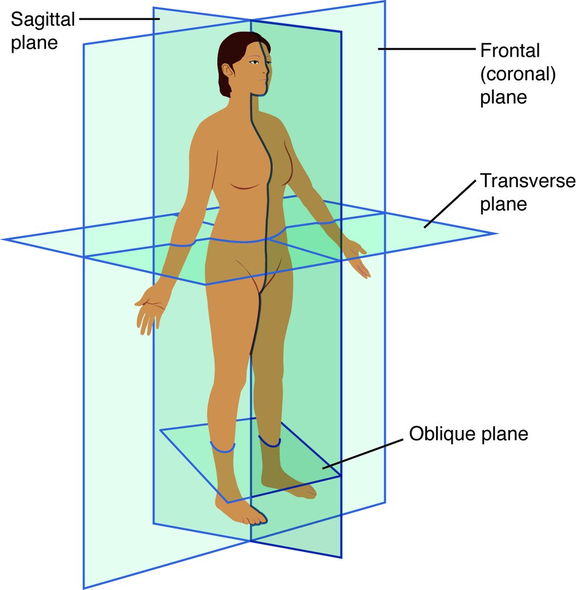

Cutting the body to see inside it
Slice a loaf of bread straight across and each slice shows a small, rounded face. Cut the same loaf lengthwise and you see one long face running from end to end. The loaf has not changed; the direction of the cut has. The body works the same way. Anatomists, surgeons and scanners all look at the body in flat slices, and the three main anatomical planes, sagittal, frontal and transverse, name the direction of each cut. This page teaches those planes, the sections they produce, and how medical imaging uses them.
Planes and sections
A plane is an imaginary flat surface passed through the body. A section is the actual cut surface you see when the body, or an organ, is divided along a plane. Planes describe direction; sections are what you look at. Sectional anatomy is the study of the body as it appears in sections, the way scanners show it.
Every plane is defined from the anatomical position. Figure 1 shows the three main planes on a body in that position.

The sagittal plane: right and left
The sagittal plane (Latin sagitta = arrow, like an arrow flying from front to back) is a vertical plane that divides the body into right and left parts.
- The midsagittal plane (also called the median plane) runs exactly down the midline and divides the body into equal right and left halves. A midsagittal section of the head shows one half of the nose, the mouth and the brain, cut down the middle.
- A parasagittal plane (para- = beside) is any sagittal plane off the midline. It divides the body into unequal right and left parts. A parasagittal section through the right eye passes through only one eye.
There is only one midsagittal plane, but there are countless parasagittal planes.
The frontal plane: front and back
The frontal plane is a vertical plane that divides the body into anterior (front) and posterior (back) parts. It is also called the coronal plane (Latin corona = crown), because it runs like a headband over the top of the head from one ear to the other. This course uses "frontal plane".
A frontal section through the chest shows both lungs side by side with the heart between them, the view you get when a chest CT is rebuilt in the frontal plane.
The transverse plane: upper and lower
The transverse plane (trans- = across) is a horizontal plane that divides the body into superior (upper) and inferior (lower) parts. It is also called the horizontal plane, and imaging staff call it the axial plane. A section cut along it is a cross section.
A transverse section at the level of the navel shows a ring of skin and muscle around the intestines, with the backbone at the back. It is the slice a CT scanner makes.
Oblique planes, and cutting organs
An oblique plane (Latin obliquus = slanted) is any plane at an angle between the three main planes. Oblique sections are harder to interpret, but some structures, such as parts of the heart, line up best along one.
The same words apply to a single organ or a tube inside the body. Cut a blood vessel across its length and you get a cross section: a ring. Cut it along its length and you get a longitudinal section: two parallel walls with the channel between them. Cut it at a slant and you get an oval. Figure 2 shows all three.
The rule: the shape you see in a section depends on the direction of the cut as much as on the structure. Under a microscope, a round profile might be a ball or a tube cut across. You work out which by comparing sections in different planes.
The three planes compared
| Sagittal | Frontal (coronal) | Transverse (horizontal) | |
|---|---|---|---|
| Orientation | vertical, front to back | vertical, side to side | horizontal |
| Divides the body into | right and left | anterior and posterior | superior and inferior |
| Word roots | sagitta = arrow | corona = crown | trans- = across |
| Special versions | midsagittal (equal halves), parasagittal (unequal) | none | cross section is the cut surface |
| Where you meet it | side views of the head and brain | front views of the chest and abdomen | CT slices |
Medical imaging: seeing sections without cutting
Medical imaging means the ways of making pictures of the inside of a living body without opening it. Each method works by a different physical mechanism, and that mechanism decides what it shows well.
X-ray (radiograph)
X-rays pass through the body onto a detector behind it. Dense materials, such as bone and metal, absorb more X-rays, so fewer reach the detector behind them and those areas appear white. Air absorbs very little and appears black. Soft tissues fall in between, in shades of gray. The picture is called a radiograph. It is a projection, a shadow: everything along each beam's path overlaps into one flat image. X-rays are a form of ionizing radiation, so each image carries a small dose.
CT (computed tomography)
CT scanning (tom = cut, slice; -graphy = recording) turns X-rays into sections. An X-ray source spins around you while detectors on the opposite side measure how much each beam was weakened, from hundreds of angles. A computer uses those measurements to calculate the density at every point in a thin slice. The result is a stack of transverse sections. The computer can then rebuild the stack into sagittal or frontal views. CT is fast and shows bone, bleeding and air very well, but it uses a larger dose of ionizing radiation than a single radiograph.
Transverse CT images are viewed as if you were standing at the patient's feet looking up toward the head. So the patient's right side appears on the left of the screen, just as when you face a person.
MRI (magnetic resonance imaging)
MRI uses a very strong magnet and radio waves, not X-rays. The magnetic field lines up the hydrogen nuclei in the water and fat of your tissues. Radio pulses knock them out of line. As they realign, they give off faint radio signals, and tissues with different amounts of water and fat give off different signals. A computer builds sections in any plane. MRI shows soft tissues, such as the brain, spinal cord and joints, in fine detail. It uses no ionizing radiation, but the magnet makes some metal implants and devices unsafe.
PET (positron emission tomography)
For a PET scan, a tracer carrying a weakly radioactive label is injected into a vein. Cells that are very active take up more of the tracer, and the scanner maps where the signal comes from. PET shows activity more than structure, which is why it is used to find active cancer or to see which parts of the brain are working. It is usually combined with a CT scan so the activity can be placed on the anatomy.
Ultrasound (sonography)
Ultrasound, also called sonography (son = sound), uses a hand-held probe that sends high-frequency sound waves into the body. The waves echo back from boundaries between tissues, and the time each echo takes gives its depth. The image is a live section in whatever plane the probe is held. Ultrasound uses no ionizing radiation, so it is the first choice in pregnancy. Bone and air block sound waves, so it cannot see through them.
| Radiograph | CT | MRI | PET | Ultrasound | |
|---|---|---|---|---|---|
| What it uses | X-rays | X-rays from many angles | magnet and radio waves | radioactive tracer | sound waves |
| Image type | flat projection | sections (mainly transverse) | sections in any plane | sections showing activity | live section in the probe's plane |
| Ionizing radiation | yes, small dose | yes, larger dose | no | yes | no |
| Shows best | bone, air in the lungs | bone, bleeding, organs, fast in emergencies | soft tissue, brain, joints | active tissue | fluid-filled organs, pregnancy, moving heart |